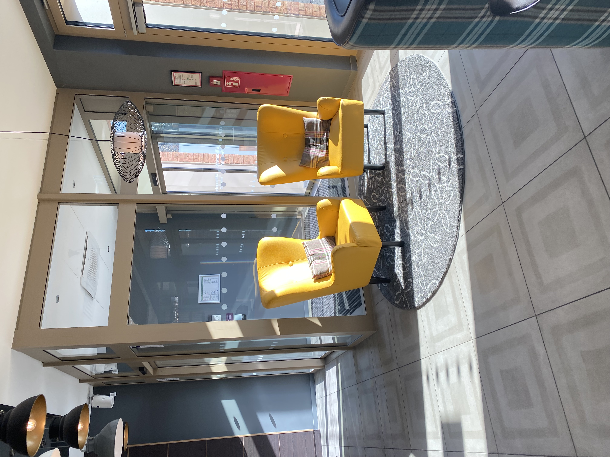

Die Navigation

Unterkünften in Deutchland
Wenn man nach Unterkünften in Deutchland sucht, gibt es viele verschiedene Möglichkeiten. Viele Reisende buchen ihr Hotel online über Plattformen wie Booking.com oder Airbnb. Dort kann man Hotels, Apartments oder private Zimmer finden. Diese Seiten sind sehr praktisch, weil man Preise vergleichen und Bewertungen von anderen Gästen lesen kann.
In großen Städten wie Berlin, Frankfurt am Main oder Munich gibt es auch viele bekannte Hotelketten. Beispiele sind Hilton Hotels & Resorts, Marriott International oder Ibis. Diese Hotels bieten oft einen guten Standard und befinden sich häufig in der Nähe von Bahnhöfen oder im Stadtzentrum.
Für junge Reisende oder Menschen mit kleinerem Budget sind Hostels eine gute Alternative. Dort teilt man sich oft ein Zimmer mit anderen Reisenden, was günstiger ist und eine gute Möglichkeit bietet, neue Leute kennenzulernen. Besonders für Interrail-Reisende sind Hostels sehr beliebt.
Insgesamt gibt es also viele verschiedene Optionen – von luxuriösen Hotels bis zu günstigen Hostels oder privaten Wohnungen. Deshalb kann jeder eine Unterkunft finden, die zu seinem Budget und zu seiner Reise passt.
Der Zugverkehr
Der Zugverkehr in Deutchland ist sehr gut ausgebaut und eine der beliebtesten Arten zu reisen. Das größte Bahnunternehmen ist Deutsche Bahn, das viele Städte im ganzen Land miteinander verbindet.
Für lange Strecken benutzen viele Menschen den Intercity-Express (ICE). Diese Hochgeschwindigkeitszüge fahren sehr schnell und verbinden große Städte wie Berlin, Frankfurt am Main, Hamburg und Munich. Die Züge sind komfortabel und haben oft WLAN, Steckdosen und ein Bordrestaurant.
Neben den schnellen Fernzügen gibt es auch Regionalzüge, die kleinere Städte und Dörfer verbinden. Diese Züge sind besonders praktisch für kurze Strecken oder für Pendler.
Viele Reisende kaufen ihre Tickets online oder über die App der Deutsche Bahn. Außerdem gibt es spezielle Angebote und Bahn-Pässe, zum Beispiel für junge Reisende oder für Menschen, die mehrere Länder in Europa besuchen möchten.
Insgesamt ist das Reisen mit dem Zug in Deutschland einfach, schnell und eine umweltfreundliche Alternative zum Auto oder Flugzeug.